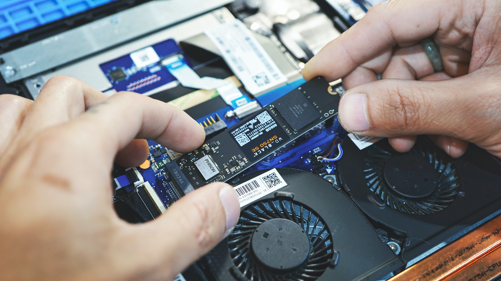

Welcome to the Land of Storage!
Imagine your computer is a house. You've got your furniture (hardware) and your family (software), but where do you store all your stuff? That's where storage comes in! It's your PC's digital attic, basement, and garage all rolled into one.
At CheapBeast, we'll help you find the perfect storage solution for your beastly build. Learn about HDDs, SSDs, and how to strike the perfect balance between capacity, speed, and affordability!
Storage Installation:
Step 1:
Pick the optimal storage solution based on your requirements, such as SSDs, HDDs, or a mix. Consider factors like capacity, speed, and form factor. Remember, size does matter when it comes to storage!Step 2:
Secure the storage device in the suitable bay or slot in your case. For 2.5" or 3.5" drives, use screws or embrace the simplicity of a tool-less mounting system. For M.2 drives, gently slide the drive into the M.2 slot at an angle, then press it down and fasten it with a screw. Snug as a bug in a rug!Step 3:
Link the SATA data cable (if needed) from the storage device to an available SATA port on the motherboard. Be gentle, the cables have feelings too!Step 4:
Connect the SATA power cable from the power supply to the storage device (if required). Don't worry, they're a perfect match!Step 5:
Ensure all cables are correctly connected and neatly organized to maintain a clean and efficient build. After all, nobody likes a messy room!Tip:
Want to be a speed demon? Install your operating system on an SSD for lightning-fast boot times.